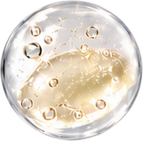
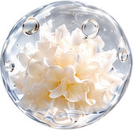

FORMULA FACTS
2% 米糠來源發酵原料
米糠來源發酵原料添加量2%，融入每日保養。搭配銀耳萃取、甘油與尿囊素，水潤保濕，細緻呵護。
2%發酵原料為原料添加量，依品牌補充資訊；非純米糠或活性物濃度。
CLINICAL REPAIR SERUM / 50 mL
精粹修護精華
米糠發酵的細緻保養
補充肌膚水分，舒緩乾燥造成的不適。
維持柔嫩、細緻的膚觸。
台灣製造｜50 mL
定價 NT$1,680
了解使用方式 ↓
INGREDIENT ORIGIN
東豐米糠的故事
選用源自花蓮東豐拾穗有機米糠的發酵原料，結合酵母發酵與配方開發。精粹修護精華搭配銀耳萃取與尿囊素，補充肌膚水分，維持柔嫩細緻的膚觸。
閱讀完整品牌故事 →FORMULA
配方的細緻搭配

本系列的原料特色，將米糠的發酵應用融入日常保養。

協助肌膚保水，維持水潤膚觸。

舒緩乾燥造成的不適。
成分圖片為概念示意，非產品微觀結構或成品實測；發酵原料2%指供應原料添加量。
HOW TO USE
每日保養的精華步驟
臉部清潔並使用化妝水後，取適量精華塗抹於全臉或局部，輕柔按摩至吸收。後續可依保養習慣搭配乳液或乳霜。
首次使用前，建議先小範圍試用。本品含酸類成分與香料，請依自身膚況使用。
左圖為水潤保養意象，非產品質地實拍或實測影像。
商品規格
全成分
Water, Butylene Glycol, Saccharomyces Ferment Lysate Filtrate, Glycerin, Phenoxyethanol, Coceth-7, PPG-1-PEG-9 Lauryl Glycol Ether, PEG-40 Hydrogenated Castor Oil, Allantoin, Azelaic Acid, Chlorphenesin, Tremella Fuciformis Sporocarp Extract, o-cymen-5-ol, Fragrance.
注意事項
本品僅供外用，請勿吞食，並置於孩童無法取得之處。
本品含酸類成分；首次使用前，建議先於耳後或手臂內側小範圍試用。
請勿塗抹於傷口、紅腫、潰爛及皮膚異常部位。
避免接觸眼睛；若誤觸，請以大量清水沖洗，必要時就醫。
若使用後出現不適，請停止使用並諮詢皮膚科醫師。
常見問題
成品也有有機認證嗎？
本頁的「有機米糠」指原料來源，不代表本產品整體已取得有機化粧品認證。
精華在什麼步驟使用？
臉部清潔、化妝水之後使用，再依保養習慣搭配乳液或乳霜。
敏感肌可以使用嗎？
本配方含酸類成分與香料，並非所有膚況皆適用。建議先局部試用；如有不適，停止使用並諮詢醫師。
畫面中的農場與質地都是實拍嗎？
田野、發酵與水潤質地部分使用品牌意象素材及示意圖；不作為農場現場、工廠製程或產品實測的證明。